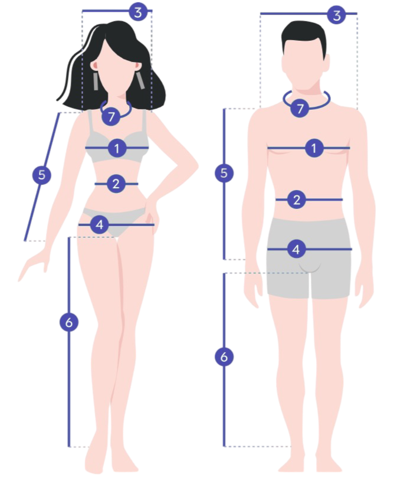

Як правильно знімати мірки
1. Обхват грудей. Оберніть сантиметр навколо найоб'ємнішої і виступаючої частини грудей, наполовину вдихніть і зафіксуйте обсяг.
2. Обхват талії. Оберніть сантиметр навколо найтоншої частини талії, вимірюйте напів вдихаючи. Не втягуйте і не надувайте живіт під час вимірювання.
3. Ширина плеча. Тримаючі сантиметр перед собою, зафіксуйте відстань від краю одного плеча до краю іншого. Не потрібно обертати плечі по колу, для цієї мірки потрібен «напівобхват».
4. Обхват стегон. Вимірюється по найоб'ємнішій частині сідниць, приблизно на рівні кульшових суглобів.
5. Довжина рукава. Витягнувши руку наполовину, або тримаючи прямо, але ні в якому разі, не згинаючи, виміряйте відстань від плеча до зап'ястя.
6. Довжина ноги. Стоячи прямо, виміряйте відстань від паху до кісточки на щиколотці.
7. Обхват шиї. Вимірюється основа шиї безпосередньо над ключицею.